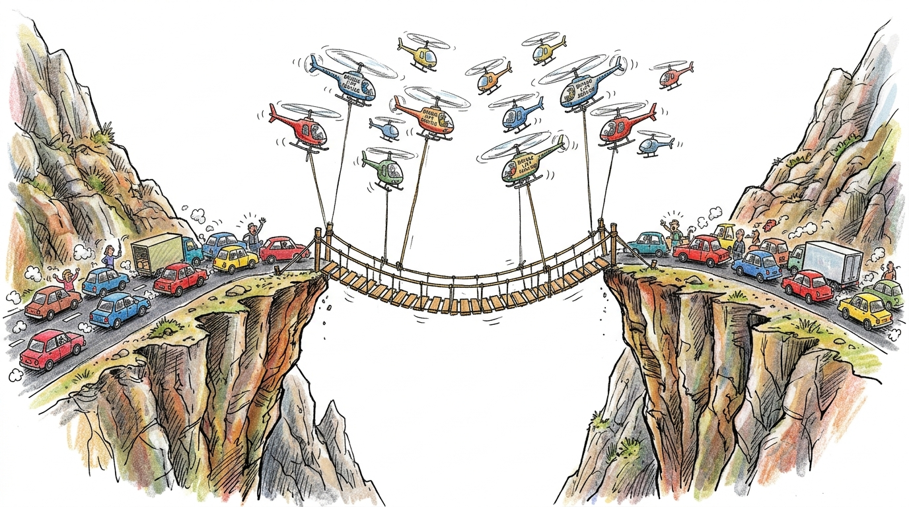

The Abstract vs. The Asphalt
Prologue: Why Enterprise AI Strategies Collide with Reality


"Look closely at the illustration above. Two mountain cliffs separated by an unyielding abyss, with real vehicles backed up on the asphalt on both sides, waiting for passage. And what did the theorists build? A fragile bridge dangling mid-air from a swarm of hovering helicopters. Expectation management is an architect's primary duty: never route enterprise traffic toward impassable terrain until the foundation is proven and ready to carry the load. Listen closely as we unpack the lesson."
The shelves of corporate libraries sag under the weight of AI strategy guides. They offer immaculate frameworks, crystalline roadmaps, and mathematically perfect ROI projections. They speak of digital transformation as a linear ascent, a clean migration from the analog past to the intelligent future. They ignore the asphalt—the messy, unyielding friction of enterprise execution.
Consider the absurdity captured in our prologue illustration: commuters on both sides of a mountain gorge stranded in gridlock, waiting for a crossing, while architects attempt to float a bridge using a fleet of hovering helicopters. It is a vivid metaphor for what happens when technology teams prioritize exotic abstraction over practical physics. Engineers and architects must focus on practical challenges from the outset—rigorously verifying load-bearing, ground-truth solutions that either anchor a real bridge into solid rock or chart viable alternative routes.
Expectation management is a vital architectural discipline: do not move operational traffic toward impossible terrain until the infrastructure is proven and fully ready to handle it. Promising a 'flying bridge' only breeds false confidence, creating massive organizational gridlock and wasting irreplaceable stakeholder time. Respecting the value of others' time and enterprise capital means acknowledging basic economic reality: burning fuel to keep helicopters hovering in the sky for years is financially and operationally ruinous. True architectural discipline does not mean finding clever ways to sustain an impossible illusion—it means having the clarity and integrity to wave off unviable ideas on Day One before they stall the entire enterprise.
In the real world, AI doesn't arrive as a clean solution; it collides with legacy systems, entrenched departments, and human resistance. The algorithms are flawless, but the boardrooms are not. This book is not one of those immaculate guides. It is a graphic novel about the collision. It is about how the theoretical brilliance of AI strategy buckles under the weight of budget freezes, data turf wars, and the sheer existential terror of betting a multi-billion dollar enterprise on code.
We use the narrative-driven visual medium not just to illustrate concepts, but to personify the friction itself. Return on Investment (ROI) is not a spreadsheet cell; it is Neha Desai, the Fiscal Architect, fighting for every dollar of capital allocation. Data Governance is not a policy document; it is Aarav Patel, the Risk Guardian, staring down regulatory fines. Scalability is not a cloud deployment strategy; it is the nightmare Rajesh Iyer, the Operational Strategist, faces when a pilot program breaks his entire factory floor.
The academic frameworks—the comprehensive blueprints for systematic enterprise architecture, the balanced scorecards, the maturity models—are the maps. Our characters are the explorers trying to navigate the terrain while the ground shifts beneath them, making the connection between the abstract model and the practical, everyday survival mechanics of the corporate world.

"With the stage set, let us open the feed to our supply chain. In Chapter 1, we unveil the three interconnected entities of the Smart Mobility Ecosystem and meet the nine board leaders navigating the strict fiduciary responsibility of AI."